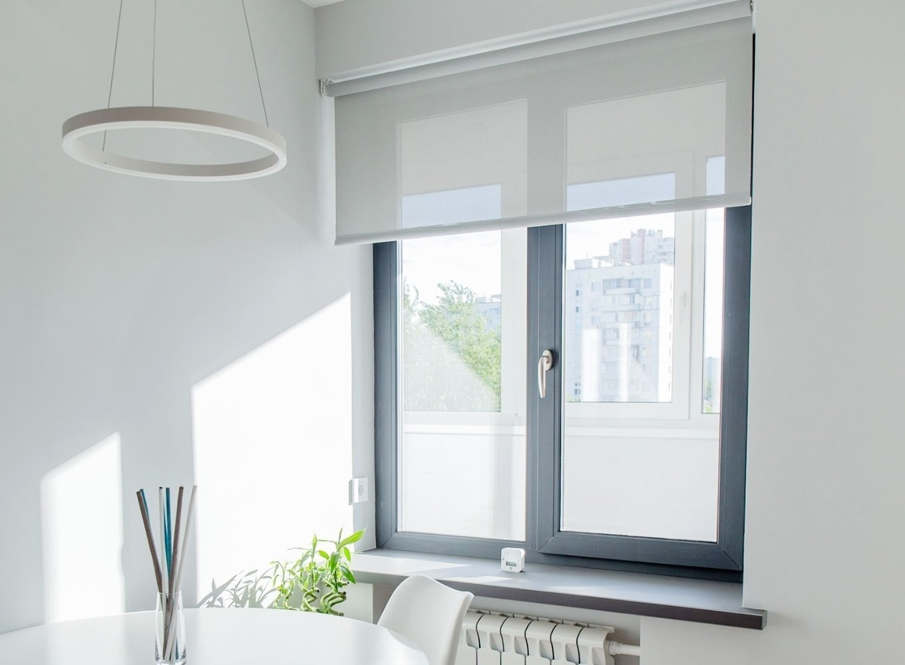
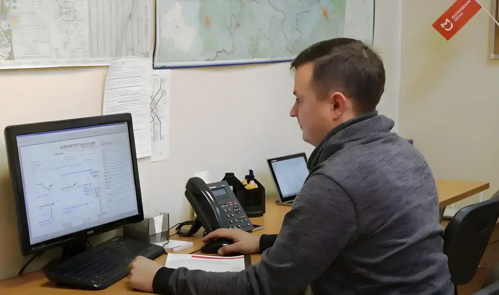
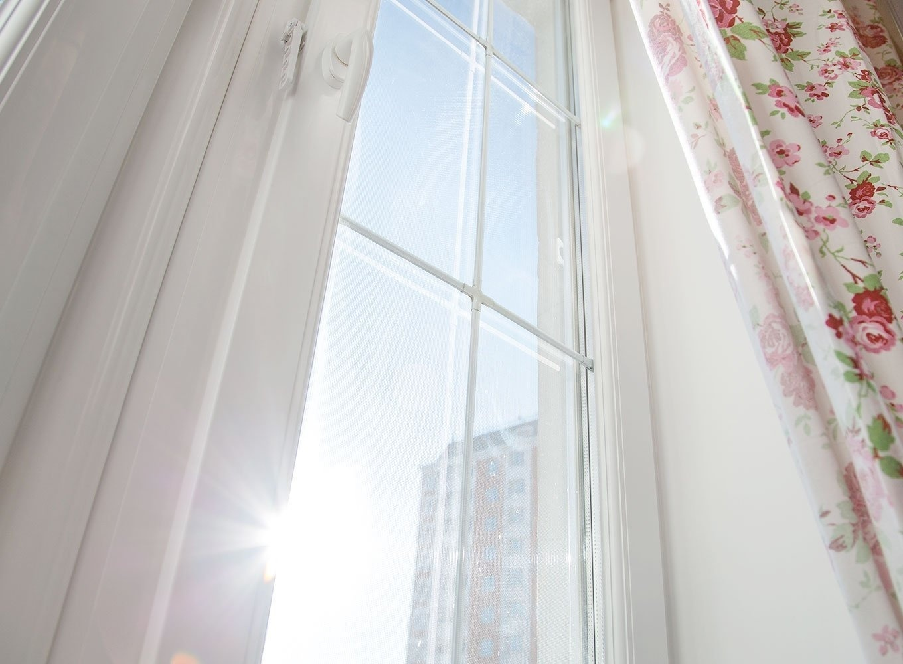
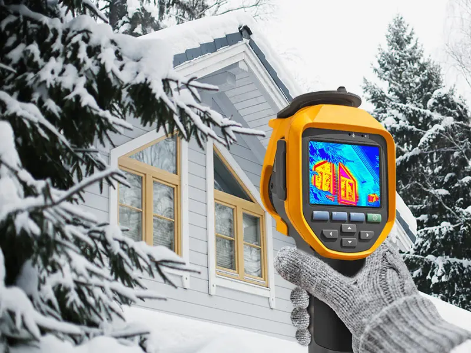

Как выбрать окна в квартиру рядом с дорогой
Защита квартиры от уличного шума и выбор подходящей оконной системы.
Читать статьюКак выбрать, на чём сэкономить
и что сделать, чтобы дома было комфортнее.

Защита квартиры от уличного шума и выбор подходящей оконной системы.
Читать статью
Солнцезащитные стеклопакеты и способы уменьшить перегрев комнаты.
Читать статью
Безопасные средства, инструменты и порядок ухода за окнами.
Читать статью
Комплектации остекления, состав цены и выбор решения под бюджет.
Читать статью
Подготовка к замеру проема и факторы, влияющие на итоговые размеры.
Читать статью
Критерии выбора окон для квартиры: тепло, тишина, свет, профиль и стеклопакет.
Читать статью
Теплопотери, мостики холода и параметры энергоэффективных окон.
Читать статью
Последствия дешевого остекления от застройщика и момент замены окон.
Читать статью
Различия монтажной глубины профилей и подходящие условия применения.
Читать статью
Этапы установки, монтажный шов и проверка качества работ.
Читать статьюКраткие разборы по материалам «Московских окон» ↗. Даты и иллюстрации — из оригиналов.